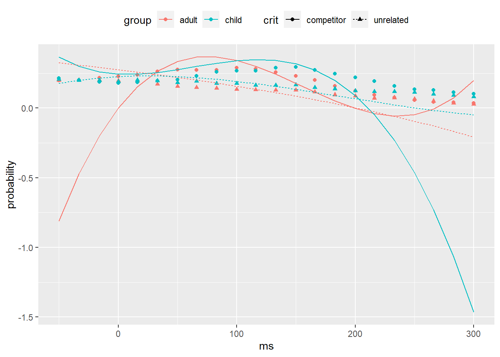
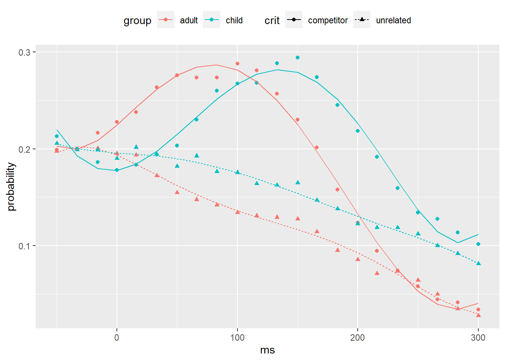

library("tidyverse")
pog <- read_rds("data-derived/pog_cts.rds")4 Polynomial regression
For more information about these approaches, see Barr (2008) and Mirman, Dixon, and Magnuson (2008). It is also possible to use Generalized Additive Mixed Models (GAMMs), which can more easily accommodate arbitrary wiggly patterns and asymptotes, but that is beyond the current scope of this textbook.
# A tibble: 1,021,288 × 5
sub_id t_id f_c role pad
<int> <int> <int> <fct> <lgl>
1 1 1 -90 target FALSE
2 1 1 -89 target FALSE
3 1 1 -88 target FALSE
4 1 1 -87 target FALSE
5 1 1 -86 target FALSE
6 1 1 -85 target FALSE
7 1 1 -84 target FALSE
8 1 1 -83 target FALSE
9 1 1 -82 target FALSE
10 1 1 -81 target FALSE
# … with 1,021,278 more rows4.1 Binning data
We are going to follow the Mirman, Dixon, and Magnuson (2008) approach. What we want to do first is to model the shape of the curve for existing competitors and see if it differs across children and adults.
We will perform separate by-subject and by-item analysis. The reason why this is needed is that we have to first aggregate the data in order to deal with the frame-by-frame dependencies. A common approach is to aggregate frames into 50 ms bins (i.e. each having 3 frames).
The general formula for binning data is:
bin = floor( (frame + binsize/2) / binsize ) * binsize
To bin things up into bins of 3 frames each, it would be
bin = floor( (frame + 3/2) / 3) * 3
To get a sense for how this formula works, try it out in the console.
sample_frames <- -10:10
rbind(frame = sample_frames,
bin = floor( (sample_frames + 3/2) / 3) * 3) [,1] [,2] [,3] [,4] [,5] [,6] [,7] [,8] [,9] [,10] [,11] [,12] [,13]
frame -10 -9 -8 -7 -6 -5 -4 -3 -2 -1 0 1 2
bin -9 -9 -9 -6 -6 -6 -3 -3 -3 0 0 0 3
[,14] [,15] [,16] [,17] [,18] [,19] [,20] [,21]
frame 3 4 5 6 7 8 9 10
bin 3 3 6 6 6 9 9 9
Why add half a bin?
Shifting frames forward by half of the binsize gives us more accurate bin numbering. To see why, consider the unshifted version to our shifted version above.
## unshifted version
rbind(frame = sample_frames,
bin = floor(sample_frames / 3) * 3) [,1] [,2] [,3] [,4] [,5] [,6] [,7] [,8] [,9] [,10] [,11] [,12] [,13]
frame -10 -9 -8 -7 -6 -5 -4 -3 -2 -1 0 1 2
bin -12 -9 -9 -9 -6 -6 -6 -3 -3 -3 0 0 0
[,14] [,15] [,16] [,17] [,18] [,19] [,20] [,21]
frame 3 4 5 6 7 8 9 10
bin 3 3 3 6 6 6 9 9Note that in the shifted version, the bin name corresponds to the median frame contained in the bin, whereas in the unshifted version, it corresponds to the first frame in the bin. For instance, bin 0, contains -1, 0, and 1 in the shifted version; in the unshifted version, it contains 0, 1, and 2.
4.1.1 Activity: Calculating bins
Following the above logic, add the variables bin and ms (time in milliseconds for the corresponding bin) to the pog table. Save the result as pog_calc.
# A tibble: 1,021,288 × 7
sub_id t_id f_c role pad bin ms
<int> <int> <int> <fct> <lgl> <int> <int>
1 1 1 -90 target FALSE -30 -500
2 1 1 -89 target FALSE -30 -500
3 1 1 -88 target FALSE -29 -483
4 1 1 -87 target FALSE -29 -483
5 1 1 -86 target FALSE -29 -483
6 1 1 -85 target FALSE -28 -466
7 1 1 -84 target FALSE -28 -466
8 1 1 -83 target FALSE -28 -466
9 1 1 -82 target FALSE -27 -450
10 1 1 -81 target FALSE -27 -450
# … with 1,021,278 more rows
Solution
pog_calc <- pog %>%
mutate(bin = floor((f_c + 3/2) / 3) %>% as.integer(),
ms = as.integer(1000 * bin / 60))4.1.2 Activity: Count frames in bins
For the analysis below, we’re going to focus on the existing competitors (ctype == "exist"). Link the pog_calc data to information about subjects and conditions (crit) to create the following table, where Y is the number of frames observed for the particular combination of sub_id, group, crit, ms, and role. Save the resulting table as pog_subj_y.
# A tibble: 50,630 × 6
sub_id group crit ms role Y
<int> <chr> <chr> <int> <fct> <int>
1 1 adult competitor -500 target 6
2 1 adult competitor -500 critical 4
3 1 adult competitor -500 existing 4
4 1 adult competitor -500 novel 6
5 1 adult competitor -500 (blank) 0
6 1 adult competitor -483 target 7
7 1 adult competitor -483 critical 5
8 1 adult competitor -483 existing 8
9 1 adult competitor -483 novel 8
10 1 adult competitor -483 (blank) 2
# … with 50,620 more rows
Solution
subjects <- read_csv("data-raw/subjects.csv",
col_types = "ic")
trials <- read_csv("data-raw/trials.csv",
col_types = "iiiiii")
stimuli <- read_csv("data-raw/stimuli.csv",
col_types = "iiciccc")
pog_subj_y <- pog_calc %>%
inner_join(subjects, "sub_id") %>%
inner_join(trials, c("sub_id", "t_id")) %>%
inner_join(stimuli, c("iv_id")) %>%
filter(ctype == "exist") %>%
count(sub_id, group, crit, ms, role,
name = "Y", .drop = FALSE)4.1.3 Activity: Compute probabilities
Now add in variables N, the total number of frames for a given combination of sub_id, group, crit, and ms, and p, which is the probability (Y / N). Save the result as pog_subj.
# A tibble: 50,630 × 8
sub_id group crit ms role Y N p
<int> <chr> <chr> <int> <fct> <int> <int> <dbl>
1 1 adult competitor -500 target 6 20 0.3
2 1 adult competitor -500 critical 4 20 0.2
3 1 adult competitor -500 existing 4 20 0.2
4 1 adult competitor -500 novel 6 20 0.3
5 1 adult competitor -500 (blank) 0 20 0
6 1 adult competitor -483 target 7 30 0.233
7 1 adult competitor -483 critical 5 30 0.167
8 1 adult competitor -483 existing 8 30 0.267
9 1 adult competitor -483 novel 8 30 0.267
10 1 adult competitor -483 (blank) 2 30 0.0667
# … with 50,620 more rows
Hint
Recall what we did back in the plotting chapter, when creating probs_exist (a windowed mutate). You’ll need to do something like that again here.
Solution
pog_subj <- pog_subj_y %>%
group_by(sub_id, group, crit, ms) %>%
mutate(N = sum(Y),
p = Y / N) %>%
ungroup()4.2 Plot mean probabilities
4.2.1 Activity: Mean probabilities
Let’s now compute the mean probabilities for looks to the critical object across groups (adults, children) and condition (competitor, unrelated). First calculate the table pog_means below, then use it to create the graph below.
# A tibble: 244 × 4
group crit ms probability
<chr> <chr> <int> <dbl>
1 adult competitor -500 0.137
2 adult competitor -483 0.140
3 adult competitor -466 0.131
4 adult competitor -450 0.129
5 adult competitor -433 0.135
6 adult competitor -416 0.137
7 adult competitor -400 0.135
8 adult competitor -383 0.138
9 adult competitor -366 0.137
10 adult competitor -350 0.129
# … with 234 more rows
Solution
pog_means <- pog_subj %>%
filter(role == "critical") %>%
group_by(group, crit, ms) %>%
summarize(probability = mean(p),
.groups = "drop")ggplot(pog_means, aes(ms, probability,
shape = crit, color = group)) +
geom_point(alpha = .5) +
coord_cartesian(xlim = c(-200, 500)) +
theme(legend.position = "top")4.3 Polynomial regression
Our task now is to fit the functions shown in the above figure using orthogonal polynomials. To avoid asymptotes, we will limit our analysis to 200 to 500 ms window, which is where the function seems to be changing.
The first thing we will do is prepare the data, adding in deviation-coded numerical predictors for group (G) and crit (C).
We will load in the R packages {lme4} for fitting linear mixed-effects models, and {polypoly} for working with orthogonal polynomials.
# if you don't have it, type
# install.packages("polypoly") # in the console
library("polypoly")
library("lme4")
pog_prep <- pog_subj %>%
filter(role == "critical", ms >= -200) %>%
mutate(G = if_else(group == "child", 1/2, -1/2),
C = if_else(crit == "competitor", 1/2, -1/2))
## check that we didn't make any errors
pog_prep %>%
distinct(group, crit, G, C)# A tibble: 4 × 4
group crit G C
<chr> <chr> <dbl> <dbl>
1 adult competitor -0.5 0.5
2 adult unrelated -0.5 -0.5
3 child competitor 0.5 0.5
4 child unrelated 0.5 -0.5pog_3 <- pog_prep %>%
poly_add_columns(ms, degree = 3) %>%
select(sub_id, group, G, crit, C, ms, p, ms1, ms2, ms3)mod_3 <- lmer(p ~ (ms1 + ms2 + ms3) * G * C +
((ms1 + ms2 + ms3) * C || sub_id),
data = pog_3)
summary(mod_3)Linear mixed model fit by REML ['lmerMod']
Formula: p ~ (ms1 + ms2 + ms3) * G * C + ((1 | sub_id) + (0 + ms1 | sub_id) +
(0 + ms2 | sub_id) + (0 + ms3 | sub_id) + (0 + C | sub_id) +
(0 + ms1:C | sub_id) + (0 + ms2:C | sub_id) + (0 + ms3:C | sub_id))
Data: pog_3
REML criterion at convergence: -14758.4
Scaled residuals:
Min 1Q Median 3Q Max
-3.2565 -0.5914 -0.0358 0.5113 5.4038
Random effects:
Groups Name Variance Std.Dev.
sub_id (Intercept) 0.001249 0.03534
sub_id.1 ms1 0.054835 0.23417
sub_id.2 ms2 0.027294 0.16521
sub_id.3 ms3 0.026226 0.16194
sub_id.4 C 0.003698 0.06081
sub_id.5 ms1:C 0.128879 0.35900
sub_id.6 ms2:C 0.106783 0.32678
sub_id.7 ms3:C 0.061623 0.24824
Residual 0.005815 0.07625
Number of obs: 7138, groups: sub_id, 83
Fixed effects:
Estimate Std. Error t value
(Intercept) 0.133722 0.003983 33.569
ms1 -0.360730 0.026378 -13.676
ms2 -0.188137 0.019077 -9.862
ms3 0.134597 0.018736 7.184
G 0.027162 0.007967 3.409
C 0.030741 0.006915 4.445
ms1:G 0.108453 0.052756 2.056
ms2:G -0.035381 0.038154 -0.927
ms3:G -0.088315 0.037473 -2.357
ms1:C 0.058203 0.041147 1.414
ms2:C -0.193833 0.037774 -5.131
ms3:C 0.045101 0.029710 1.518
G:C 0.001996 0.013831 0.144
ms1:G:C 0.068046 0.082295 0.827
ms2:G:C 0.082218 0.075548 1.088
ms3:G:C -0.127579 0.059420 -2.147
Correlation matrix not shown by default, as p = 16 > 12.
Use print(x, correlation=TRUE) or
vcov(x) if you need itIt converged! Before we get too excited, plot the model fitted values against the observed values to assess the quality of the fit.
We need data to feed in to the predict() function in order to generate our fitted values. We’ll use pog_means for this purpose, adding in all of the predictors we need for the model, and restricting the range.
pog_new <- pog_means %>%
filter(ms >= -200) %>%
mutate(G = if_else(group == "child", 1/2, -1/2),
C = if_else(crit == "competitor", 1/2, -1/2)) Now we are ready to feed it into predict() to generate fitted values. Note that we want to make predictions for the “typical” subject with random effects of zero, which requires setting re.form = NA for the predict() function. See ?predict.merMod for details. We use newdata = . to send the current data from our pipeline as the argument for newdata.
fits_3 <- pog_new %>%
poly_add_columns(ms, degree = 3) %>%
mutate(fitted = predict(mod_3, newdata = .,
re.form = NA))Now we plot the fitted values (lines) against observed (points).
ggplot(fits_3,
aes(ms, probability,
shape = crit, color = group)) +
geom_point() +
geom_line(aes(y = fitted, linetype = crit)) +
theme(legend.position = "top")Not good. We might want to try a higher order model. Alternatively, we can restrict the range further to get rid of asymptotic elements in the later part of the window. Let’s try the latter first because that’s fairly easy.
pog_3b <- pog_3 %>%
filter(between(ms, -50L, 300L))
## refit with a different dataset
mod_3b <- update(mod_3, data = pog_3b)Generate fitted values from the new model and plot.
fits_3b <- pog_new %>%
filter(between(ms, -50L, 300L)) %>%
poly_add_columns(ms, degree = 3) %>%
mutate(fitted = predict(mod_3b, newdata = .,
re.form = NA))
ggplot(fits_3b,
aes(ms, probability,
shape = crit, color = group)) +
geom_point() +
geom_line(aes(y = fitted, linetype = crit)) +
theme(legend.position = "top")
Well, that is even worse.
4.3.1 Activity: Quintic model
A cubic is really not enough. Try to fit a quintic (5th order) function on the reduced data range (-50 ms to 300 ms). Use the bobyqa optimizer to get lmer() to converge (control = lmerControl(optimizer = "bobyqa")), and fit it with REML=FALSE.
Then, follow the example above to assess the quality of fit using a plot.
Solution
pog_5 <- pog_prep %>%
filter(between(ms, -50L, 300L)) %>%
poly_add_columns(ms, degree = 5)
mod_5 <- lmer(p ~ (ms1 + ms2 + ms3 + ms4 + ms5) * G * C +
((ms1 + ms2 + ms3 + ms4 + ms5) * C || sub_id),
data = pog_5, REML=FALSE,
control = lmerControl(optimizer = "bobyqa"))Now evaluate the fit.
fits_5 <- pog_new %>%
filter(between(ms, -50L, 300L)) %>%
poly_add_columns(ms, degree = 5) %>%
mutate(fitted = predict(mod_5, newdata = .,
re.form = NA))
ggplot(fits_5,
aes(ms, probability,
shape = crit, color = group)) +
geom_point() +
geom_line(aes(y = fitted, linetype = crit)) +
theme(legend.position = "top")
OK, that’s a fit that we can be happy with.
Let’s have a look at the model output.
summary(mod_5)Linear mixed model fit by maximum likelihood ['lmerMod']
Formula: p ~ (ms1 + ms2 + ms3 + ms4 + ms5) * G * C + ((1 | sub_id) + (0 +
ms1 | sub_id) + (0 + ms2 | sub_id) + (0 + ms3 | sub_id) +
(0 + ms4 | sub_id) + (0 + ms5 | sub_id) + (0 + C | sub_id) +
(0 + ms1:C | sub_id) + (0 + ms2:C | sub_id) + (0 + ms3:C |
sub_id) + (0 + ms4:C | sub_id) + (0 + ms5:C | sub_id))
Data: pog_5
Control: lmerControl(optimizer = "bobyqa")
AIC BIC logLik deviance df.resid
-9233.6 -9004.1 4653.8 -9307.6 3615
Scaled residuals:
Min 1Q Median 3Q Max
-3.2631 -0.4883 -0.0013 0.4694 4.4521
Random effects:
Groups Name Variance Std.Dev.
sub_id (Intercept) 0.002499 0.04999
sub_id.1 ms1 0.046758 0.21624
sub_id.2 ms2 0.017703 0.13305
sub_id.3 ms3 0.014331 0.11971
sub_id.4 ms4 0.005942 0.07709
sub_id.5 ms5 0.006101 0.07811
sub_id.6 C 0.007937 0.08909
sub_id.7 ms1:C 0.113327 0.33664
sub_id.8 ms2:C 0.075215 0.27425
sub_id.9 ms3:C 0.061012 0.24701
sub_id.10 ms4:C 0.020677 0.14380
sub_id.11 ms5:C 0.021688 0.14727
Residual 0.002148 0.04635
Number of obs: 3652, groups: sub_id, 83
Fixed effects:
Estimate Std. Error t value
(Intercept) 0.167871 0.005541 30.295
ms1 -0.209290 0.024008 -8.718
ms2 -0.121173 0.015042 -8.056
ms3 0.006115 0.013625 0.449
ms4 0.046584 0.009195 5.066
ms5 0.003498 0.009299 0.376
G 0.026723 0.011082 2.411
C 0.054710 0.009899 5.527
ms1:G 0.148235 0.048016 3.087
ms2:G 0.006309 0.030084 0.210
ms3:G -0.070349 0.027249 -2.582
ms4:G 0.018576 0.018390 1.010
ms5:G 0.006853 0.018597 0.368
ms1:C 0.010683 0.037648 0.284
ms2:C -0.191025 0.030953 -6.171
ms3:C 0.006511 0.028053 0.232
ms4:C 0.099358 0.017347 5.728
ms5:C -0.003818 0.017695 -0.216
G:C -0.009915 0.019798 -0.501
ms1:G:C 0.144761 0.075295 1.923
ms2:G:C 0.046990 0.061907 0.759
ms3:G:C -0.156586 0.056106 -2.791
ms4:G:C 0.009317 0.034695 0.269
ms5:G:C 0.061278 0.035390 1.732
Correlation matrix not shown by default, as p = 24 > 12.
Use print(x, correlation=TRUE) or
vcov(x) if you need itNow let’s use model comparison to answer our question: do the time-varying components for lexical competition vary across children and adults?
mod_5_drop <-
update(mod_5,
. ~ . -ms1:G:C -ms2:G:C -ms3:G:C -ms4:G:C -ms5:G:C)
anova(mod_5, mod_5_drop)Data: pog_5
Models:
mod_5_drop: p ~ ms1 + ms2 + ms3 + ms4 + ms5 + G + C + (1 | sub_id) + (0 + ms1 | sub_id) + (0 + ms2 | sub_id) + (0 + ms3 | sub_id) + (0 + ms4 | sub_id) + (0 + ms5 | sub_id) + (0 + C | sub_id) + (0 + ms1:C | sub_id) + (0 + ms2:C | sub_id) + (0 + ms3:C | sub_id) + (0 + ms4:C | sub_id) + (0 + ms5:C | sub_id) + ms1:G + ms2:G + ms3:G + ms4:G + ms5:G + ms1:C + ms2:C + ms3:C + ms4:C + ms5:C + G:C
mod_5: p ~ (ms1 + ms2 + ms3 + ms4 + ms5) * G * C + ((1 | sub_id) + (0 + ms1 | sub_id) + (0 + ms2 | sub_id) + (0 + ms3 | sub_id) + (0 + ms4 | sub_id) + (0 + ms5 | sub_id) + (0 + C | sub_id) + (0 + ms1:C | sub_id) + (0 + ms2:C | sub_id) + (0 + ms3:C | sub_id) + (0 + ms4:C | sub_id) + (0 + ms5:C | sub_id))
npar AIC BIC logLik deviance Chisq Df Pr(>Chisq)
mod_5_drop 32 -9229.0 -9030.5 4646.5 -9293.0
mod_5 37 -9233.6 -9004.1 4653.8 -9307.6 14.653 5 0.01195 *
---
Signif. codes: 0 '***' 0.001 '**' 0.01 '*' 0.05 '.' 0.1 ' ' 1There are further things we could potentially do with this model, including performing model comparison on the time-varying components. One thing we probably should do would be to repeat all the above steps, but treating items as a random factor instead of subjects.
One issue with polynomial regression is that the complexity of the model is likely to give rise to convergence problems. One strategy is to estimate the parameters using re-sampling techniques, which we’ll learn about in the next chapter.
Before we do that, let’s save pog_subj, because we’ll need it for the next set of activities.
pog_subj %>%
saveRDS(file = "data-derived/pog_subj.rds")